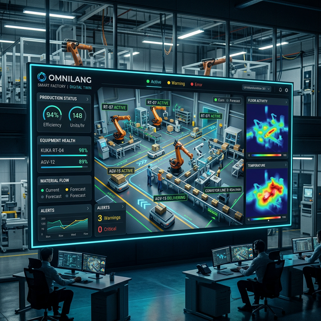
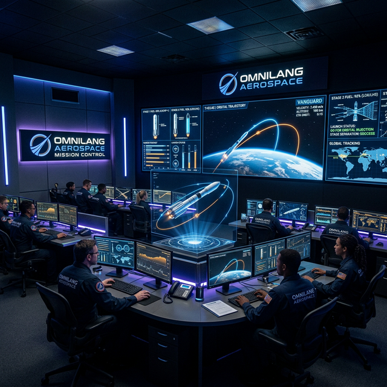
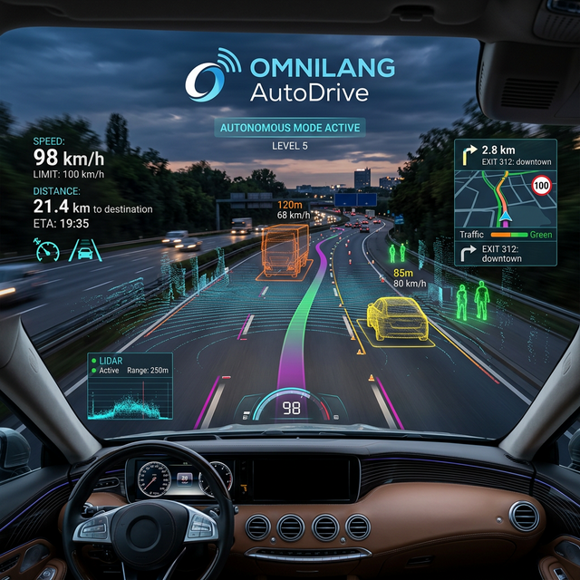
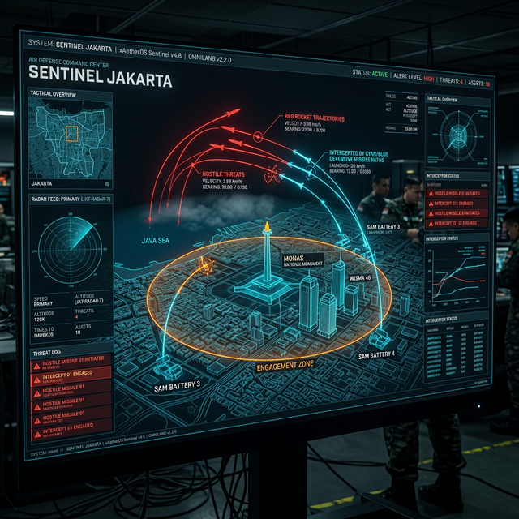
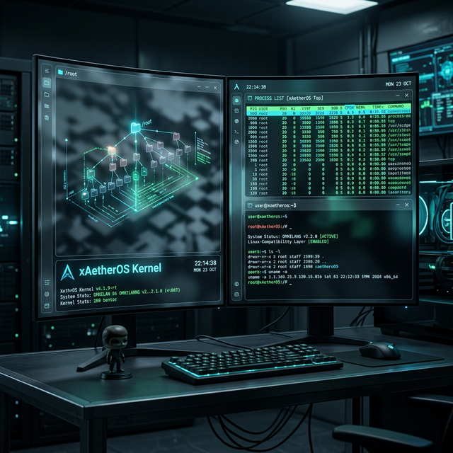
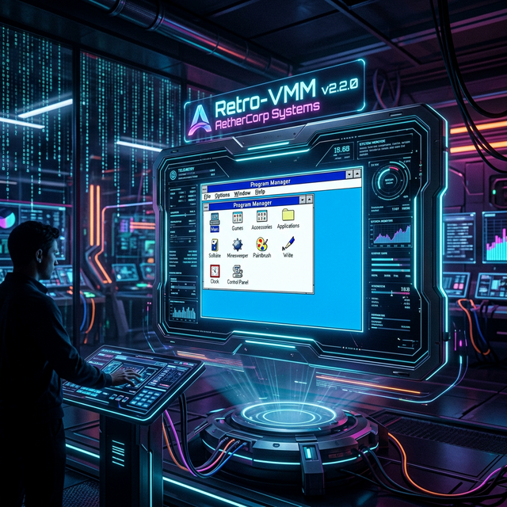

Satu Bahasa, Satu Fabric. Universal Intent Language yang dirancang kustom untuk menyatukan AI, Blockchain, & IoT dalam harmoni xAetherOS.
Keunggulan strategis untuk infrastruktur digital masa depan.
Arsitektur mesh-native yang memungkinkan eksekusi logika terdistribusi tanpa kompleksitas jaringan manual.
Sistem keamanan berbasis Capability Token (Zero-Trust) yang terpasang langsung di lapisan bahasa.
Runtime berbasis Rust yang sangat optimal dengan overhead minimal, siap untuk sistem real-time kritis.
Melihat OmniLang beraksi dalam skenario dunia nyata yang kompleks.

Orkestrasi AGV, Drone, dan Lengan Robotik secara real-time dengan sinkronisasi spasial 3D yang presisi.

Kalkulasi fisika peluncuran roket multi-stage, perhitungan TWR, dan optimasi trajektori orbital.

Sistem persepsi kendaraan otonom berbasis Lidar dan deteksi objek AI Oracle untuk navigasi aman.

Sistem pertahanan udara taktis yang memproteksi wilayah Jakarta Metropolitan dengan intersepsi otomatis.

Simulasi manajemen proses (PID), alokasi sinyal, dan sistem perizinan file POSIX (chmod) dalam xAetherOS.

Membangkitkan kembali Windows 3.1 melalui simulasi Window Manager dan alokasi memori 16-bit klasik.
Coba ketik dan evaluasi kode OmniLang langsung di browser Anda, didukung oleh mesin WebAssembly 100% Native Rust.
// Memuat Modul WebAssembly...
OmniLang menyederhanakan siklus kompleks Observe, Orient, Decide, Act menjadi pernyataan kehendak (Intent) yang elegan dan ringkas.
// 1. Menjadikan Node Lokal sebagai Mesh AI Worker
const X_CAPABILITY_TOKEN = "alpha-omega-99";
@oracle(model: "models/mobilenet.onnx")
fn classify_image(pixels: [f64]) -> [f64];
fn main() {
println("Menjalankan Daemon AI Mesh...");
// `$ omnilang serve worker.omni --port 8081`
}// 2. Implementasi Otoritas Client / Sensor Layer
const X_CAPABILITY_TOKEN = "alpha-omega-99";
@mesh(target: "18.232.1.9:8081")
fn classify_image(pixels: [f64]) -> [f64];
fn main() {
let pixels = capture_camera();
let ai_result = classify_image(pixels);
// Dieksekusi jarak jauh dengan Token secara gaib!
}// 3. Memicu Ekspansi Node Aktuator (HUI)
@hardware(port: "COM3", baud_rate: "115200")
fn trigger_alarm(severity: i32) -> bool;
@mesh(target: "127.0.0.1:8082")
fn main() {
if detect_anomaly() > 99.0 {
trigger_alarm(1);
}
}
// `$ omnilang serve actuator.omni --port 8082 --hui COM3`// 3. Kebijakan Niat Manusia (Human Intent)
INTENT: Pengamanan Zona Merah VVIP
ACTOR:
- Node_Sensor_A
- AI_Oracle_Core
RULE:
- IF AI_Oracle_Core.detect_anomaly(Node_Sensor_A.feed) > 99
- THEN CloseGates, SendDroneSectorA